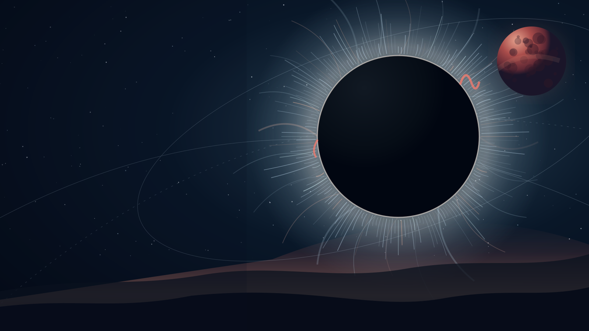

ROZDZIAŁ 09 · ŚWIATŁO, CIEŃ I NIEZWYKŁA GEOMETRIA
Dzień, w którym Słońce zniknęło.
W środku dnia zapada zmierzch. Ptaki cichną. Na czarnym niebie pojawia się świetlista korona gwiazdy, której nie da się oglądać na co dzień. Nie zgasło Słońce. To mały Księżyc znalazł się dokładnie tam, gdzie musiał.
ZJAWISKO, KTÓRE WYGLĄDA JAK NIEMOŻLIWE
W pewnym momencie dzień przestaje być dniem.
Wyobraź sobie słoneczne popołudnie. Na chodniku leżą ostre cienie drzew. Rozmawiają ludzie, przejeżdżają samochody. A jednak światło zaczyna się zmieniać. Najpierw tak powoli, że trudno to zauważyć. Potem coraz wyraźniej.
Na niebie Słońce wygląda, jakby ktoś odgryzał z niego niewielki fragment. Powoli ubywa jasnej tarczy. Świat nabiera dziwnych, przygaszonych barw. Gdy cień Księżyca w końcu obejmie obserwatora w wąskim pasie całkowitości, pojawia się ciemność podobna do zmierzchu. Tam, gdzie przed chwilą była oślepiająca gwiazda, pozostaje czarny krąg otoczony delikatną koroną.
Nie jest to awaria Słońca. Słońce nie przestaje emitować światła. Zmienia się tylko droga światła do konkretnego miejsca na Ziemi. Księżyc, oddalony od nas o setki tysięcy kilometrów, na chwilę staje na tej drodze.
8 kwietnia 2024 roku miliony ludzi w Ameryce Północnej mogły obserwować jedno z takich widowisk. Jednak najbardziej fascynujące pytanie brzmi nie „jak to wygląda?”, lecz „dlaczego zdarza się tak rzadko i tylko w określonych miejscach?”
Trzy zwyczajne ciała niebieskie. Jedno nadzwyczajne ustawienie. I nagle widzimy fragment Słońca, którego blask na co dzień nie pozwala nam dostrzec.
Kto zasłania kogo? To zmienia wszystko.
W zaćmieniu nie ma magii ani niezwykłych sił. Jest źródło światła, przeszkoda i miejsce, do którego światło nie może dotrzeć. Zmiana kolejności ciał zmienia całe widowisko.
Księżyc rzuca cień na Ziemię.
Słońce świeci z jednej strony, a Księżyc przechodzi przed nim. Tylko ludzie znajdujący się na obszarze, do którego dociera księżycowy cień, zobaczą zaćmienie. Poza tym obszarem Słońce może wyglądać zupełnie zwyczajnie.
Umowna geometria. Rozmiary ciał, odległości i kąty nie są zachowane w skali.Ziemia rzuca cień na Księżyc.
Nasza planeta zajmuje miejsce między Słońcem a Księżycem. Gdy Księżyc wchodzi w cień Ziemi, jego jasna powierzchnia ciemnieje. Przy zaćmieniu całkowitym może przybrać odcień miedzi i głębokiej czerwieni.
Umowny przekrój. Narysowane cienie służą wyjaśnieniu zjawiska, nie obliczaniu efemeryd.WIELKOŚĆ POZORNA MA ZNACZENIE
Dlaczego czasem zostaje pierścień ognia?
Słońce i Księżyc wyglądają na niebie jak tarcze o podobnej średnicy kątowej. Ale odległości między ciałami zmieniają się w czasie. Kilka procent różnicy wystarcza, by całkowite zniknięcie Słońca zamieniło się w świetlistą obrączkę.
Korona gwiazdy
Pozorna tarcza Księżyca całkowicie przykrywa jasną tarczę Słońca. Tylko na wąskim pasie całkowitości można zobaczyć koronę słoneczną bez blasku fotosfery.
Pierścień ognia
Księżyc wygląda na nieco mniejszy od Słońca, dlatego jego ciemny krąg nie zasłania całej tarczy. Wokół pozostaje jasna obrączka światła słonecznego.
Ugryzione Słońce
Dla danego obserwatora tylko część tarczy Słońca jest zasłonięta. Nawet jeśli gdzieś na Ziemi trwa faza całkowita, kilkaset kilometrów dalej zjawisko może być tylko częściowe.
Nów jest co miesiąc. Zaćmienie — nie.
Gdyby orbita Księżyca leżała dokładnie w płaszczyźnie ruchu Ziemi wokół Słońca, świat zaćmień wyglądałby inaczej. Przy każdym nowiu pojawiałaby się możliwość zaćmienia Słońca, a przy każdej pełni — Księżyca.
Tymczasem płaszczyzna orbity Księżyca jest nachylona do ekliptyki o około 5,1°. Przez większość miesięcy Księżyc podczas nowiu przechodzi z naszego punktu widzenia ponad Słońcem lub pod nim, a podczas pełni mija ziemski cień.
Dwa punkty, w których orbita Księżyca przecina płaszczyznę ekliptyki, nazywamy węzłami. Zaćmienia mogą pojawiać się wówczas, gdy nów albo pełnia wypadają dostatecznie blisko jednego z tych węzłów. Okresy takich możliwości nazywamy sezonami zaćmień.
Dlaczego Księżyc zmienia się w miedź?
CZERWONY KSIĘŻYC / ILUSTRACJA ARTYSTYCZNAW zaćmieniu Księżyca niebo nie musi ciemnieć. To sam Księżyc powoli wchodzi w cień naszej planety. A kiedy cały skrywa się w cieniu, nie znika. Czasem płonie czerwienią.
Światło Słońca docierające do granic ziemskiej atmosfery składa się z wielu barw. Krótsze fale — zwłaszcza niebieskie — znacznie łatwiej rozpraszają się w powietrzu. Czerwone i pomarańczowe przechodzą przez atmosferę skuteczniej; część światła załamuje się i trafia nawet do obszaru ziemskiego cienia.
Podczas całkowitego zaćmienia Księżyc jest więc oświetlany nie bezpośrednim światłem słonecznym, ale światłem przefiltrowanym przez obrzeża atmosfery Ziemi. W pewnym sensie jego powierzchnię rozświetlają jednocześnie wszystkie ziemskie wschody i zachody Słońca.
Kolor nie zawsze jest taki sam. Obecność pyłu, chmur i aerozoli w atmosferze wpływa na jasność oraz odcień zaćmionego Księżyca. To fizyka, a nie zwiastun nadzwyczajnych wydarzeń.
Zaćmienie Księżyca może być całkowite, częściowe albo półcieniowe. Oglądanie go gołym okiem jest bezpieczne — inaczej niż obserwacja zaćmienia Słońca.
Przesuń jeden obiekt. Zmień całe zjawisko.
Przełącz się między zaćmieniem Słońca a Księżyca. Ustaw wyidealizowane wyrównanie albo odsuń jedno z ciał od osi. Wynik zmieni się od razu: całkowite, obrączkowe, częściowe, półcieniowe — lub brak zaćmienia.
Księżyc całkowicie przesłania tarczę Słońca.
Cień, który pomógł zobaczyć zakrzywienie światła.
W 1919 roku nie chodziło tylko o zachwyt. Zaćmienie stało się narzędziem pozwalającym sprawdzić jedną z najbardziej śmiałych teorii w dziejach fizyki.
Ogólna teoria względności Einsteina przewidywała, że światło odległych gwiazd przechodzące blisko Słońca zmieni kierunek wskutek zakrzywienia czasoprzestrzeni. Problem? W zwykły dzień blask Słońca uniemożliwia obserwowanie gwiazd na tle nieba w jego bezpośrednim sąsiedztwie.
Podczas całkowitego zaćmienia 29 maja 1919 roku zespoły obserwacyjne pracowały między innymi na wyspie Príncipe i w brazylijskim Sobral. Arthur Eddington był jedną z centralnych postaci wyprawy. Fotografie gwiazd pozwoliły porównać ich pozorne położenia z wcześniejszymi pomiarami.
Ogłoszone wyniki uznano za ważne poparcie teorii Einsteina. Współcześni historycy nauki zwracają uwagę na ograniczenia ówczesnych pomiarów i późniejsze, dokładniejsze potwierdzenia. Mimo to był to jeden z tych momentów, kiedy cień Księżyca otworzył okno na nowe rozumienie Wszechświata.
W cieniu Księżyca astronomowie mogli badać zjawisko, którego nie byliby w stanie zobaczyć na jasnym dziennym niebie: drobne przesunięcia pozornych pozycji gwiazd na skutek ugięcia ich światła przez grawitację Słońca.
Piękne zjawisko. Prawdziwe ryzyko dla oczu.
Podczas zaćmienia częściowego i obrączkowego nigdy nie patrz bezpośrednio na Słońce bez prawidłowej ochrony. Zwykłe okulary przeciwsłoneczne nie wystarczą. Potrzebne są specjalne filtry do obserwacji Słońca, zgodne z odpowiednimi wymaganiami normy ISO 12312-2.
Gołym okiem można obserwować Słońce tylko w krótkiej fazie całkowitego zaćmienia, gdy jasna fotosfera jest w całości zakryta — i wyłącznie z miejsca rzeczywistej całkowitości. Gdy choć fragment jasnej tarczy ponownie się ukaże, ochronę należy natychmiast założyć.
A teraz zobacz cień w trzech wymiarach.
Rysunki pomagają zrozumieć zasadę. Istniejący moduł ATLAS SOLARIS pozwala wejść w przestrzenną geometrię Słońca, Ziemi i Księżyca. Nie zmieniamy jego silnika: uruchamia się dopiero na Twoje polecenie, pod artykułem.
Oryginalne laboratorium działa we wspólnym silniku Atlasu. Etap 09 jest jego nową oprawą redakcyjną, nie kopią historycznego wydania. Symulacja nie zastępuje oficjalnych efemeryd przy planowaniu obserwacji.
Oto źródła naszego cienia.
Wszystkie podstawowe wyjaśnienia, ostrzeżenia i fakty historyczne opierają się na materiałach NASA. Interaktywne rysunki i panoramiczna okładka są autorskimi schematami, a nie fotografiami czy efemerydami.
- NASA — Why Do Eclipses Happen?Cień, półcień, antycień, typy zaćmień Słońca, wielkość pozorna i nachylenie orbity Księżyca.
- NASA — Eclipses and the MoonZaćmienia Księżyca, czerwona barwa, typy zjawisk oraz wpływ atmosfery Ziemi.
- NASA — History of EclipsesHistoryczne znaczenie zaćmień, obserwacje z 1919 roku i pomiary ugięcia światła.
- NASA — Eclipse Viewing SafetyBezpieczne obserwacje Słońca, okulary zaćmieniowe, filtry optyczne i wyjątek krótkiej fazy całkowitości.
- NASA GSFC — Visual Appearance of Lunar EclipsesPrzyczyny zmiennej jasności i czerwonego koloru Księżyca podczas zaćmienia.
ATLAS SOLARIS / ETAP 09. Obraz tytułowy łączy symbolikę całkowitego zaćmienia Słońca i czerwonego Księżyca: nie jest astronomicznie możliwą jednoczesną sceną ani zapisem obserwacji. Grafiki i laboratorium 2D są ilustracjami dydaktycznymi bez prawdziwej skali. Opis doświadczenia z 1919 roku oddziela znaczenie historyczne od precyzji współczesnych dowodów. Pełne laboratorium 3D wykorzystuje własne założenia modelu ATLAS SOLARIS.